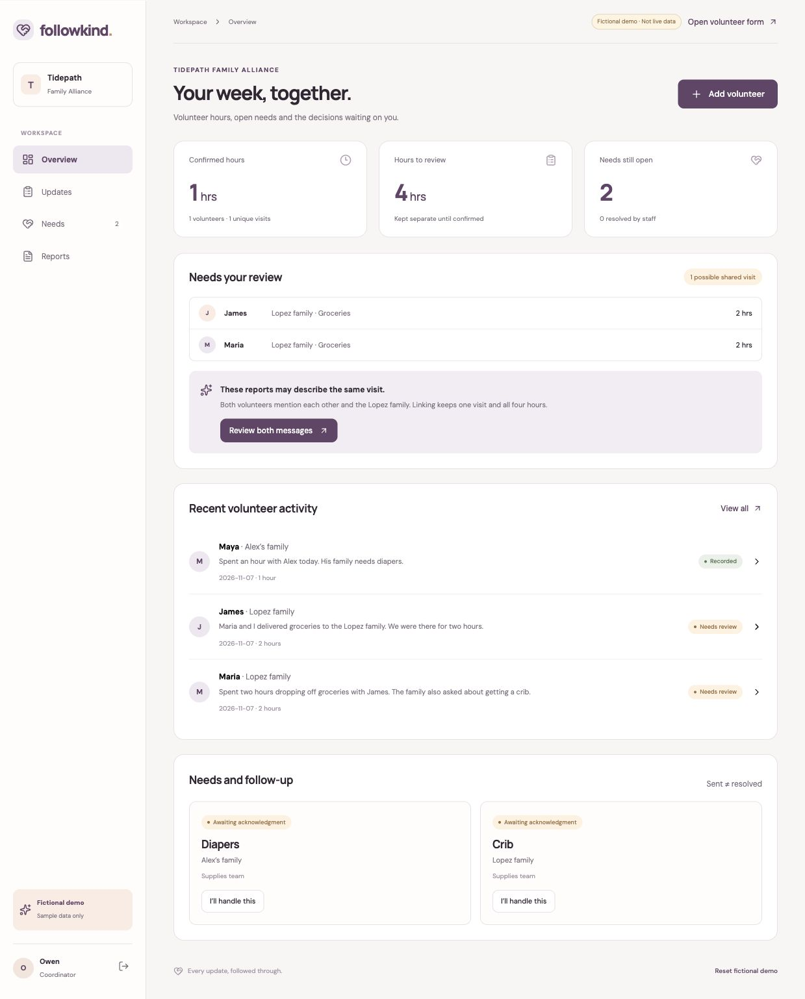

Keeping volunteer hours and requests for help from getting lost
Volunteers share what happened during a visit, but someone still has to record their time and follow up when a family needs help. I built Followkind to keep those steps together, with AI suggesting supply needs and staff reviewing every request.
Select “Explore the fictional demo” to try it without signing in. The demo uses sample data and simulated interactions.
The problem
Hours and family needs get buried in messages, leaving coordinators to copy records and chase requests.
The shift
One short volunteer update becomes a record to review and a request staff can track.
The result
A deployed prototype with live AI suggestions, plus a fictional demo of the wider workflow.

An update is only useful if someone follows through
In the supplied challenge, Owen coordinates 40 volunteers at Tidepath Family Alliance. Volunteers report visits through texts and group chats, so he spends about four hours a week copying messages into a spreadsheet. Some hours are counted twice, others are missed, and requests for supplies can sit unanswered.
Tidepath is fictional. The organizers said the challenges came from a survey of 14 South Florida nonprofits. I worked from that brief rather than conducting my own interviews, and used only fictional details in the prototype.
Keep reporting simple and make the next step clear
Volunteers should be able to report from their phone without installing an app. Coordinators need hours they can check, and staff need a clear distinction between receiving a request and resolving it. The brief also called for low cost and limited access to information about families.
For the weekend build, I chose a personal reporting link and a short form. Importing live group chats, outgoing notifications and a full team onboarding flow were outside the scope.
Ask for the hours instead of guessing them
A message like “delivered groceries today” tells us what happened, but gives no reliable duration.
Make time a required form field, alongside the date, family reference and message. A personal link identifies the volunteer.
Show the source behind each AI suggestion
A suggested need is hard to trust if the coordinator cannot see what it came from.
Use the OpenAI API to suggest a supply need and return an exact quote from the original update. The coordinator can edit the title before confirming it.
A dashboard that shows the job, not another chat
Early screens felt too much like a messaging tool. It was difficult to tell what needed attention and what had already happened, so I organized the workspace around Updates, Needs and Reports.
The plum and peach palette gives the workspace a calm tone, while status labels carry the meaning. Confirmed hours stay separate from hours awaiting review, and supply requests move from received to acknowledged to resolved.
Keep one visit without losing either volunteer’s hours
James and Maria each report two hours delivering groceries together. Treating both messages as separate visits overcounts visits, but removing one loses volunteer time.
Demonstrate a review where the coordinator compares both messages and confirms a shared visit. One visit keeps both contributions, for four volunteer hours.
Take one fictional visit through the working system
I designed the flow and interface, then used Codex to implement and deploy the app. Supabase stores the records and controls staff access. Cloudflare Workers serves the app and calls the OpenAI API on the server.
I tested a volunteer submission with an explicit hour, opened it as the coordinator, ran the live AI suggestion, confirmed a supply request and followed its status through resolution. The confirmed hour appeared in the report. The system also uses a submission ID to prevent a retried send from creating the same update twice.
Testing exposed practical issues too. An AI error was hidden behind the review window, so I moved feedback into the window. Email sign in later hit a sending limit, so the recorded walkthrough used the clearly labeled fictional demo.
Second place, with a working prototype
Followkind placed second at the DevDay Exchange Community Hackathon in Miami, held on November 7 and 8, 2026. I submitted a walkthrough of the fictional demo and tested the live AI connection separately.
Working live
Personal reporting links, saved updates, staff review, AI supply suggestions, request statuses and confirmed hours reporting.
Demo only
Shared visit review and photo preview. The demo resets on reload and does not change saved workspace records.
Still to validate
Use with nonprofit staff, time saved, notification delivery and handling real operational data. No adoption or impact metrics have been measured.
Test the reporting form and review flow with volunteer coordinators, check whether staff notice and act on requests, and validate shared visit handling before building live matching. Private photo uploads and reliable notifications would also need to be completed before real use.
About the hackathon ↗